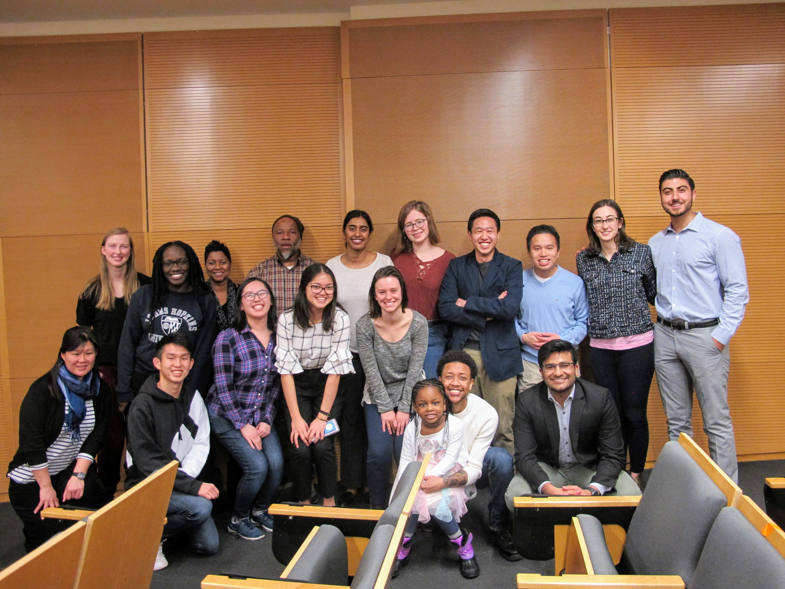
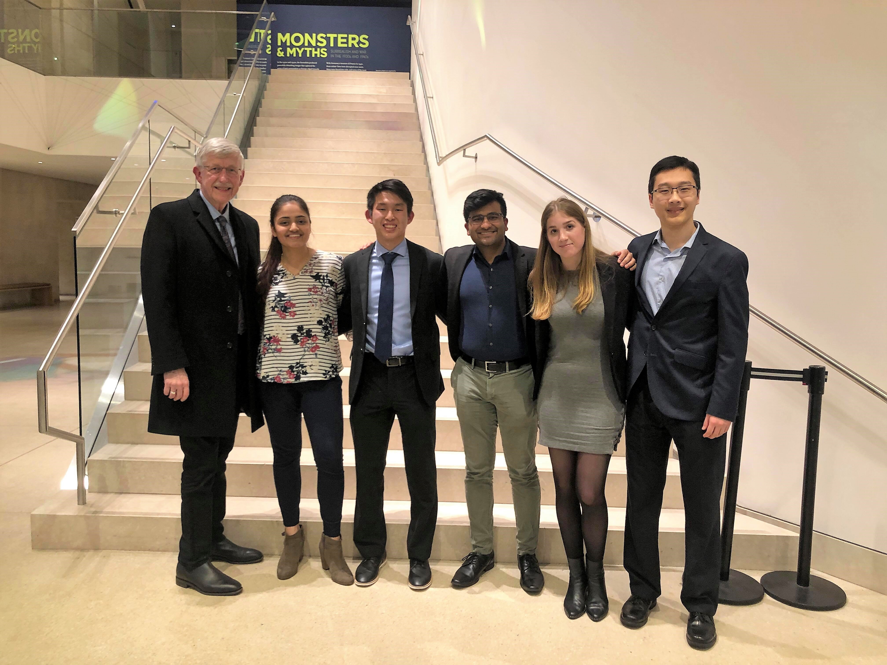
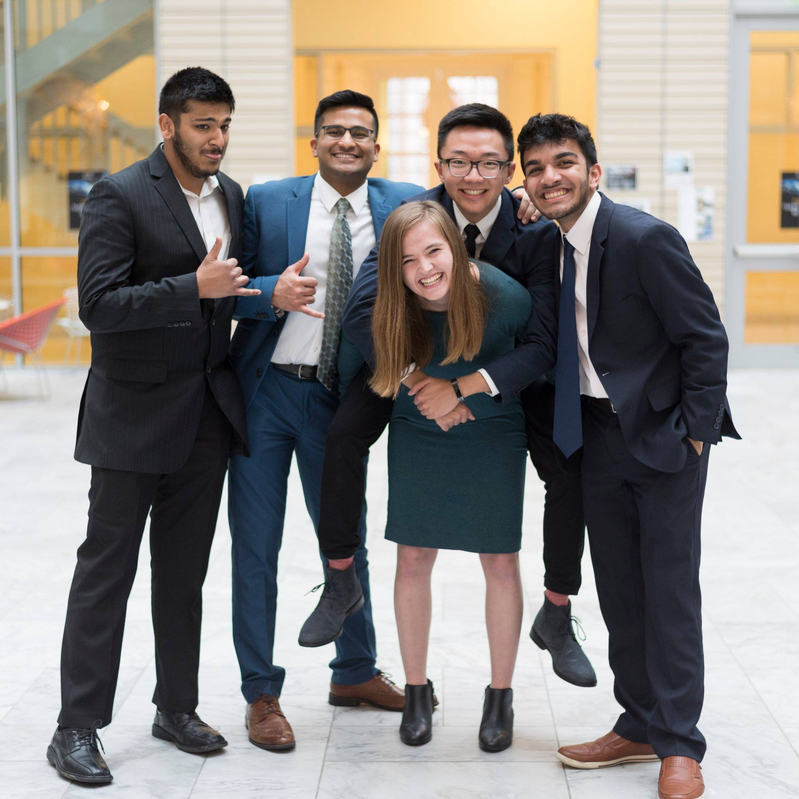

Leadership
Student Government Association | Osler Medical Symposium
Hippocrates Med Review | Hopkins for the Elderly
Johns Hopkins Student Government Association
On SGA, I am a Senator & Co-Chair of the Health, Safety, and Sustainability Committee. In this role, I have advocated for a tobacco-free campus, increased access to physical fitness training and nutritional counseling, and worked to reduce the stigma associated with mental health. In my work related to the tobacco-free campus, I have placed a particular emphasis on increasing University affiliates' access to smoking cessation resources. By working to convene University stakeholders, I have advanced efforts to develop policies regarding enforcement of any new policy announced.
To achieve improvements in students' wellbeing, I believe a holistic approach is necessary. In partnership with the Ralph S. O'Connor Recreation Center and the Student Health & Wellness Center, I developed the Healthy Hopkins Initiative, a program designed to provide students with two free personal training sessions and nutritional counseling sessions.
In an effort to destigmatize mental health, Junior Class Council President Dean Chien, Senator Kylie Sharron, and myself worked in partnership with Art Gives, A Place to Talk, the Counseling Center, and the Office of Diversity and Inclusion, to host the Johns Hopkins University Mental Health Summit in the hopes of fostering a climate of mental health awareness and overall wellness among students, staff, and faculty. Given that February 2019 marks one year since the Johns Hopkins University's Task Force on Student Mental Health and Wellbeing released its report with recommendations on ways to improve students’ mental health on campus, the mental health summit was an opportunity for students to learn about ways that they can practice self-care and reach out for resources—as well as an opportunity to reflect on progress made thus far.

We welcomed Charles Xavier Kilborn as our guest speaker at the Mental Health Summit. Charles is a motivational speaker, content creator, community healer, spoken word poet, and advocate for the gender creative community, based out of Baltimore, Md. CX uses his identity as a Black man of trans experience, recovering alcoholic, and suicide survivor, to create teachable moments from vulnerable exchanges in the hopes of creating more safe and inclusive community spaces.
Osler Medical Symposium
The Osler Medical Symposium is an undergraduate, student-led lecture series at Johns Hopkins University focused on health and medicine. As a Founding Co-Director, I have led a team of 20 students on logistics, marketing, speaker outreach, and finance teams to organize a lecture series that aims to bridge the divide between those making decisions in medicine and those affected by these decisions. By providing a forum for speakers of diverse identities and experiences, we challenge the community to push the status quo in a direction that promotes health, equity, and justice.
Notable past symposia include Dr. Leana Wen, former Baltimore City Commissioner of Health; Dr. Joshua Sharfstein, former FDA Depty Comissioner; and Dr. Paul Rothman, Dean & CEO of Johns Hopkins Medicine.

Hippocrates Med Review
The Hippocrates Med Review is an undergraduate medical news journal designed to explore the medical field through a holistic approach. I played an instrumental role in earning a $20,000 grant through Johns Hopkins University President Ronald J. Daniels' Idea Lab Competition, as well as securing an additional $5,000 in support from the Alexander Grass Humanities Institute. As Director of Finance, I managed this $25,000 budget. Aside from handling the organization's finances, as a member of the Executive Board, I established a faculty advisory board to advise the journal, collaborated with JHU Press and Gasch Printing to ensure high-quality printing of the journal, and collaborated with an app developer regarding the design and logistics behind creating an HMR app.

Hopkins for the Elderly
Hopkins for the Elderly is a volunteer group that makes weekly trips to the Keswick Multi-Care Center in Baltimore. Every week, we facilitate various activities with nursing home residents such as bingo, crafts, and even concerts. In doing so, we aim to promote healthy aging and enrich community bonds with the elderly residents.